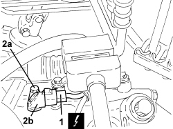

2135B74 ELECTRONIC AUTOMATIC TRANSMISSION OUTPUT RPM SENSOR - R R
- Path
- Procedures > 21 GEARBOX UNIT > 2135 AUTOMATIC TRANSMISSION EXTERNAL CONTROLS > 2135B AUTOMATIC TRANSMISSION ELECTRICAL CONTROLS > 2135B74 ELECTRONIC AUTOMATIC TRANSMISSION OUTPUT RPM SENSOR - R R
- Kind
- repair procedure (removal / refitting; the operation number is the code)
- Applies to
- engines: 2.2; all production periods; only with equipment: AUTOMATIC TRANSMISSION
- Interactive page
- https://sloeber94.github.io/elrnDB-fCrm/en/#/194002341
Applies to: engines: 2.2; all production periods
 Removing
Removing
 Refitting
RefittingOp. 5530B52 BATTERY SUPPORT/DRIP TRAY - R.R
1. Disconnect the electrical connection from the electronic automatic transmission output rpm sensor.
Description | Connector | |
|---|---|---|
1 | Automatic transmission solenoid valves |
2. Undo the bolt (2a) and remove the electronic automatic transmission rpm output sensor (2b).

Applies to: engines: 2.2; all production periods
Refitting
Removing- Place the electronic automatic transmission ouput rpm sensor back in its housing and tighten it to the recommended torque.
Component | Fastening | dia | Value (daNm) | Validity |
|---|---|---|---|---|
Automatic gearbox output speed sensor | Bolt | M6 | (automatic gearbox side) 0.6 | 2.2 CAE |
- Connect the electrical connection to the electronic automatic transmission output rpm sensor.